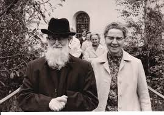
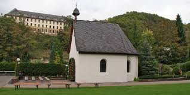
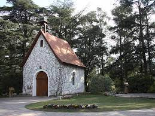

El Movimiento Apostólico de Schoenstatt es un movimiento católico mariano fundado en Alemania en 1914 por el padre José Kentenich.
La fundacion de este movimiento reside en el llamado “Santuario Original”, una modesta capilla consagrada a la virgen de Schoenstatt, cuyo nombre se debe a un rio que esta en los alrededores.
Todas las capillas consagradas el movimiento, debe ser identicas al santuario original, en la misma orientacion, la misma decoracion e instrumentos dentros. Lo que puede variar es el parque exterior del santuario. A continuacion, el santuario de Florencio Varela, el primero fundado en Argentina. Se logra apreciar la semejanza con el “Santuario Original”
